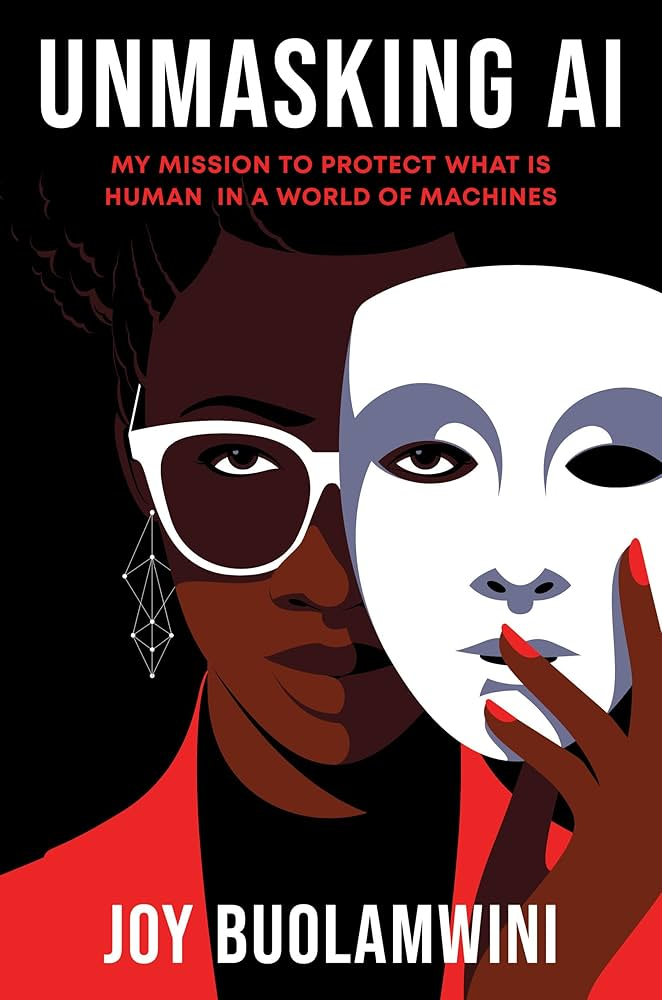

Thus far in the semester for this course, I have read a decent amount of Buolamwini’s Unmasking Ai Narrative. My initial thoughts were very intriguing since the idea that technology or artificial intellegence could have potential racial biases was one that never crossed my mine - perhaps that is because I am in a privilged position where I have personally never experienced any conflicts with it. However, that doesn’t imply that it is a problem in today’s society which Joy Buolmwini touches upon her personal experiences with facial recognition as a woman of color in this novel.
What I appreicate about her writing style is it’s narrative stucture and personability as she discusses how she started to study this phenomenon of ‘the coded gaze’ based on her background and throughout her education as a student. While I’m still in the beginning of the novel, when thing I do notice which I may not be the biggest fan of is how repetitive much of the content feels. It is important for Buolamwini to describe the problems she’s facing with the software, but when she constantly emphasizes it over and over, the line loses its significance in a way and almost becomes too victimazing. However, the points she brings up make me question why people who were initally building these kinds of softwares didn’t consider these biases and issues of representation in the first place. Is it because they didn’t matter as much during that time? Or a systemic issue? She mentiones that the idea of artificial intellegence was introduced in 1956 - so within roughly 69 years that its been able to develop, I think ideas regarding racial equality have significantly mattered more with the modern age and society.
I wonder what some LLMs think about whether or not there are issues wiht racial biases in artifical intellegence and what they have to say about themselves… Here’s what gpt4.0 had to say:
USER
Do you think artificial intelligence softwares, such as facial recognition, contain racial biases and may not be fully representative of all types of people?
ASSISTANT
Yes, there is substantial evidence suggesting that some artificial intelligence (AI) systems, including facial recognition software, can exhibit racial biases and may not perform equally well for all demographic groups. Several studies have highlighted disparities in the accuracy of facial recognition systems, particularly across different races, genders, and age groups. For instance, research has shown that these systems often have higher error rates for people with darker skin tones and for women, which can lead to misidentifications and unfair outcomes.
These biases can stem from several factors:
Training Data: AI models are trained on large datasets that may not be representative of the full diversity of human faces. If a dataset is imbalanced—overrepresenting certain demographics while underrepresenting others—the model is more likely to perform poorly on underrepresented groups.
Algorithm Design: The algorithms themselves can introduce or exacerbate biases, especially if they are not explicitly designed to account for demographic diversity.
System Evaluation: The lack of thorough testing across diverse demographic groups can result in insufficient understanding of the system’s performance across those groups.
To address these issues, it is crucial for developers to use diverse and representative datasets, implement fairness checks during the design process, regularly evaluate system performance across different demographics, and work towards transparency and accountability in AI systems. This can help mitigate biases and improve fairness and accuracy for all users.
USER
Why hasn’t this been a big issue of research in the public news? Are people actively taking steps to help solve this as the world becomes more increasingly AI focused?
ASSISTANT
The issue of bias in AI, particularly in technologies such as facial recognition, has increasingly become a topic of public research and media attention over the past several years. There are a few reasons why this topic may not have been front and center in public discourse until more recently:
Awareness and Understanding: Initially, there was a general lack of awareness and understanding of how AI systems work and the potential for bias within them. As awareness has grown, so has the attention paid to these issues.
Complexity of the Issue: The technical nature of AI and machine learning can make it difficult for the general public to engage with the specifics of algorithmic bias, which can limit broader discourse.
Emergence of High-Profile Studies and Incidents: Media attention has increased in response to high-profile studies and incidents that highlight the real-world consequences of biased AI systems, such as cases of wrongful arrests due to misidentifications by facial recognition.
Advocacy and Regulation: Advocacy groups and researchers have worked to raise awareness about the ethical implications of biased AI, leading to an increase in public and academic discussions, as well as policy considerations.
Regulatory Developments: Governments and regulatory bodies around the world are becoming more attuned to the necessity of ensuring AI deployments are fair and equitable. This includes efforts to introduce regulations and guidelines that aim to mitigate bias and protect privacy.
Corporate Responsiveness: Some technology companies are taking proactive measures to address bias in AI systems, such as diversifying training datasets, implementing fairness audits, and developing bias detection tools.
Community and NGO Involvement: Non-governmental organizations and community groups have become vocal, ensuring that issues related to AI bias are addressed, especially when they impact marginalized groups.
Overall, while more work is needed to ensure fair and equitable AI systems, there is growing recognition of these issues in both technical research and public discourse. This increase in attention is contributing to more focused research and policy initiatives aimed at reducing bias in AI technologies.
USER
Do you believe this is a pressing concern?
ASSISTANT
Yes, addressing bias in AI systems is a pressing concern. As AI technologies become more integrated into various aspects of everyday life—including law enforcement, hiring, healthcare, and financial services—the potential for biased systems to lead to unjust outcomes becomes more significant. Some key reasons why this is a critical issue include:
Social Impact: Biased AI systems can perpetuate or even exacerbate existing social inequalities and discrimination. For example, inaccuracies in facial recognition could lead to biased surveillance practices, while biased hiring algorithms could perpetuate workplace inequality.
Trust and Adoption: Trust in AI technologies is essential for their widespread adoption. If people believe these systems are biased or unfair, it can undermine public confidence and hinder the beneficial application of AI.
Legal and Ethical Implications: There are significant legal and ethical considerations around the deployment of biased AI systems. Organizations need to ensure compliance with regulations and ethical standards to avoid legal challenges and protect individual rights.
Accountability and Transparency: As AI systems make decisions that can affect people’s lives, it’s crucial to ensure these systems are transparent and accountable. Addressing bias is a key part of this, as it involves making AI systems understandable and justifiable to the people impacted by their decisions.
Long-term Effects: The longer biased systems remain unaddressed, the more likely it is that they will lead to systemic issues, reinforcing biases and making it harder to correct them in the future.
Efforts to tackle these challenges are ongoing, with researchers, policymakers, and organizations all contributing to developing solutions. These efforts include creating more representative datasets, developing algorithms that are robust to bias, setting industry standards, and establishing regulatory frameworks aimed at ensuring fairness and accountability in AI systems. Overall, addressing bias in AI is essential to harness the technology’s full potential for positive social impact.
USER
So you can verify that you may have racial biases…
ASSISTANT
As an AI language model, I don’t possess personal beliefs or the ability to experience bias in the way humans do. However, it is true that I am trained on vast datasets derived from internet sources, including a wide array of human communications. These datasets can potentially contain biased or unbalanced information, which means that biases present in the data can sometimes be reflected in the model’s outputs.
Efforts are made to minimize these biases during the training and development of AI models, but it’s a complex challenge and not entirely resolvable due to the nature of the data. Researchers and developers work continuously to identify and mitigate biases to improve fairness and accuracy.
If you notice any biased or inappropriate outputs, it’s important to provide feedback, as this helps improve the system over time. Ensuring AI systems are fair and equitable remains an ongoing process, requiring constant attention and improvement.
USER
I think I sense some biases, where do I report feedback and does it actually matter?
ASSISTANT
If you encounter biases or other issues in AI outputs, providing feedback is an important step in helping improve the systems. The process and effectiveness of reporting feedback can vary depending on the platform or organization managing the AI model. Here are some general steps you can take:
Platform-Specific Feedback Channels: Many platforms have built-in feedback mechanisms where users can report issues. Look for a feedback option in the app or website where you’re interacting with the AI.
Official Channels: Some organizations provide dedicated channels for feedback, such as support emails, forms on their website, or dedicated feedback portals.
Community Forums: Participating in community forums, discussion boards, or groups related to the AI product can also be a way to provide feedback and share experiences with other users as well as developers.
Surveys and User Studies: Occasionally, organizations conduct surveys or user studies and invite input on their systems. Participating in these can be a direct way to share your feedback.
Giving feedback is crucial because:
Improvement and Mitigation: Feedback helps developers identify and prioritize areas that need improvement, particularly regarding bias and other ethical issues.
User Experience: User reports can highlight common pain points or issues affecting the experience of the broader user community, leading to targeted enhancements.
Awareness and Accountability: Providing feedback raises awareness among developers and stakeholders about specific or systemic issues, encouraging accountability and transparency.
Organizations that actively seek and respond to user feedback are typically more effective in addressing and mitigating issues. However, the impact of your feedback can vary depending on the company’s commitment to addressing these concerns and their capacity to implement changes.
I found it interesting how honest the LLM was with the concerns I was addressing, and I’m honestly quite surprised that I don’t hear more of these concerns as the world becomes more increasingly reliant on AI for many complicated systems such as for criminal justice or healthcare. The LLM brought up many parallels between Unmasking AI and the concers that Buolamwini addresses in her book and they both try to understand the problem by navigating the basis of how these systems came to be whic